Show Code
import os
import numpy as np
import pandas as pd
import seaborn as sns
from dotenv import load_dotenvThis report explores how fasting measurements, BMI, body size, sex, and lifestyle-related variables vary across two age groups:
Age <= 30Age > 30The objective is to identify descriptive patterns, compare distributions, and examine how anthropometric and metabolic variables behave across these two age-based segments.
import os
import numpy as np
import pandas as pd
import seaborn as sns
from dotenv import load_dotenvsns.set_theme(
style="whitegrid",
context="notebook",
rc={"figure.figsize": (8, 5)}
)load_dotenv()
dataset_path = os.getenv("CLEANED_DATASET_PATH")
if dataset_path is None:
raise ValueError("CLEANED_DATASET_PATH is not set in the environment.")
df = pd.read_excel(dataset_path)
df.head()| ID | Entry Date | Age | Sex | Address | Height (CM) | Weight (KG) | Fasting | ABF | Uring Color Fasting | ... | Diet | Height (CM).1 | Weight (KG).1 | BMI | Normalized Address | Division | District | City Corporation | Sub-District | Thana | |
|---|---|---|---|---|---|---|---|---|---|---|---|---|---|---|---|---|---|---|---|---|---|
| 0 | K-225859 | 2025-02-25 00:00:00 | 50.0 | F | MIRESHARAI CTG | NaN | NaN | 17.0 | 21.1MMOL | ORANGE | ... | 4 | 147.0 | 44.0 | 20.361886 | Mirsharai, Chattogram | Chattogram | Chattogram | NaN | Mirsharai | Mirsharai Thana |
| 1 | K-225401 | 2025-02-11 00:00:00 | 35.0 | M | LOHAGORA CTG | NaN | NaN | 10.0 | 16.2MMOL | GREEN | ... | 6 | 160.0 | 62.0 | 24.218750 | Lohagara, Chattogram | Chattogram | Chattogram | NaN | Lohagara | Lohagara |
| 2 | K-225407 | 2025-02-11 00:00:00 | 55.0 | M | SANDWIP CTG | NaN | NaN | 15.5 | 22.3MMOL | YELLOW | ... | 6 | 164.0 | 61.0 | 22.679952 | Sandwip, Chattogram | Chattogram | Chattogram | NaN | Sandwip | Sandwip |
| 3 | K-225413 | 2025-02-11 00:00:00 | 50.0 | M | ANOWARA CTG | NaN | NaN | 22.7 | 27.1\nMMOL | RED | ... | 5 | 151.0 | 52.0 | 22.806017 | Anwara, Chattogram | Chattogram | Chattogram | NaN | Anwara | Anwara |
| 4 | K-225655 | 2025-02-19 00:00:00 | 57.0 | M | MIRESHARAI CTG | NaN | NaN | 7.6 | 15.0MMOL | NIL | ... | 5 | 168.0 | 76.0 | 26.927438 | Mirsharai, Chattogram | Chattogram | Chattogram | NaN | Mirsharai | Mirsharai Thana |
5 rows × 23 columns
df.shape(43777, 23)df.columns.tolist()['ID',
'Entry Date',
'Age',
'Sex',
'Address',
'Height (CM)',
'Weight (KG)',
'Fasting',
'ABF',
'Uring Color Fasting',
'Uring Color ABF',
'Acitone',
'Albumin',
'Diet',
'Height (CM).1',
'Weight (KG).1',
'BMI',
'Normalized Address',
'Division',
'District',
'City Corporation',
'Sub-District',
'Thana']required_columns = [
"Age",
"Sex",
"Height (CM)",
"Weight (KG)",
"BMI",
"Fasting"
]
missing_columns = [col for col in required_columns if col not in df.columns]
if missing_columns:
raise ValueError(f"Missing required columns: {missing_columns}")
else:
print("All required columns are present.")All required columns are present.df.dtypesID object
Entry Date object
Age float64
Sex str
Address str
Height (CM) float64
Weight (KG) float64
Fasting float64
ABF object
Uring Color Fasting object
Uring Color ABF object
Acitone object
Albumin object
Diet object
Height (CM).1 float64
Weight (KG).1 float64
BMI float64
Normalized Address str
Division str
District str
City Corporation str
Sub-District str
Thana str
dtype: objectdf[required_columns].isnull().sum().sort_values(ascending=False)Height (CM) 32743
Weight (KG) 32652
BMI 9
Age 0
Sex 0
Fasting 0
dtype: int64df.duplicated().sum()np.int64(0)df[["Age", "Height (CM)", "Weight (KG)", "BMI", "Fasting"]].describe()| Age | Height (CM) | Weight (KG) | BMI | Fasting | |
|---|---|---|---|---|---|
| count | 43777.000000 | 11034.000000 | 11125.000000 | 43768.000000 | 43777.000000 |
| mean | 47.598006 | 158.110413 | 64.855092 | 41.582140 | 11.537003 |
| std | 12.155562 | 27.258622 | 60.133519 | 2868.743566 | 22.558498 |
| min | 3.000000 | 5.300000 | 0.067000 | 0.000000 | 0.000000 |
| 25% | 39.000000 | 151.000000 | 56.000000 | 23.111111 | 7.500000 |
| 50% | 48.000000 | 158.000000 | 64.000000 | 25.566107 | 9.900000 |
| 75% | 55.000000 | 165.000000 | 72.000000 | 28.344671 | 14.000000 |
| max | 110.000000 | 1688.000000 | 6210.700000 | 600000.000000 | 3407.000000 |
categorical_columns = ["Sex"] + (["Diet"] if "Diet" in df.columns else [])
for col in categorical_columns:
print(f"\nValue counts for: {col}")
print(df[col].value_counts(dropna=False))
Value counts for: Sex
Sex
F 23230
M 20545
O 2
Name: count, dtype: int64
Value counts for: Diet
Diet
NaN 32008
6 2788
3 2659
4 2516
5 2131
2 1172
7 418
1 34
REGNANC 5
8 5
06 (P.D) 3
N/S 3
07 (P.D) 3
02NEW PA 2
07(P.D) 2
9 2
06 PPREG 1
04NEW PA 1
0595/60 1
6- 1
03(P.D) 1
.... 1
........ 1
2000 1
1400 1
2200 1
K 1
47 1
35 1
04- 1
6.1 1
06160/100 1
53 1
120/80 1
6(P.D) 1
------- 1
NEXT TIME 1
58 1
06 (PD) 1
04\ 1
39 1
16 1
Name: count, dtype: int64The goal here is to remove implausible or extreme records that may distort the analysis.
df = df.drop_duplicates().copy()
df = df[
~(
(df["BMI"] >= 60) |
(df["BMI"] <= 15) |
(df["Weight (KG)"] >= 500) |
(df["Weight (KG)"] <= 30) |
(df["Height (CM)"] > 250) |
(df["Height (CM)"] <= 100) |
(df["Fasting"] > 50)
)
].copy()df[["Age", "Height (CM)", "Weight (KG)", "BMI", "Fasting"]].describe()| Age | Height (CM) | Weight (KG) | BMI | Fasting | |
|---|---|---|---|---|---|
| count | 43517.000000 | 10945.000000 | 11027.000000 | 43508.000000 | 43517.000000 |
| mean | 47.618561 | 158.030882 | 64.392128 | 25.945947 | 11.162435 |
| std | 12.127001 | 8.886475 | 11.665086 | 4.197449 | 4.606895 |
| min | 3.000000 | 121.000000 | 31.000000 | 15.010751 | 0.000000 |
| 25% | 39.000000 | 151.000000 | 56.000000 | 23.138507 | 7.500000 |
| 50% | 48.000000 | 158.000000 | 64.000000 | 25.593737 | 9.800000 |
| 75% | 55.000000 | 165.000000 | 72.000000 | 28.326580 | 13.900000 |
| max | 110.000000 | 189.000000 | 135.000000 | 57.471264 | 38.000000 |
df["Age Group"] = np.where(df["Age"] <= 30, "<=30", ">30")
df["Age Group"].value_counts()Age Group
>30 39893
<=30 3624
Name: count, dtype: int64bmi_bins = [0, 18.5, 25, 30, np.inf]
bmi_labels = ["Underweight", "Normal", "Overweight", "Obese"]
df["BMI Category"] = pd.cut(
df["BMI"],
bins=bmi_bins,
labels=bmi_labels,
right=False
)
df["BMI Category"].value_counts(dropna=False)BMI Category
Normal 18123
Overweight 17763
Obese 6639
Underweight 983
NaN 9
Name: count, dtype: int64ax = sns.countplot(data=df, x="Age Group", hue="Age Group", palette="Set2", legend=False)
ax.set(
xlabel="Age Group",
ylabel="Count",
title="Participant Distribution by Age Group"
)[Text(0.5, 0, 'Age Group'),
Text(0, 0.5, 'Count'),
Text(0.5, 1.0, 'Participant Distribution by Age Group')]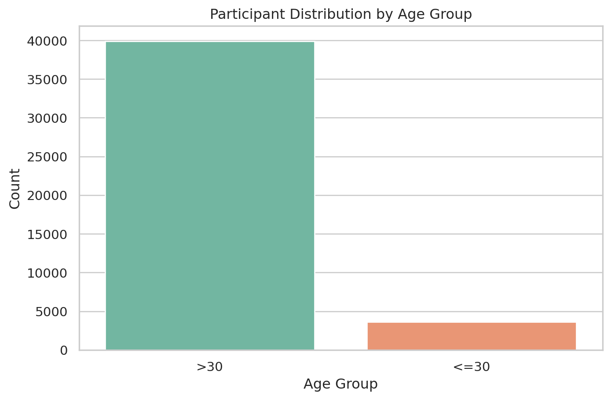
ax = sns.countplot(data=df, x="Age Group", hue="Sex", palette="Set1")
ax.set(
xlabel="Age Group",
ylabel="Count",
title="Sex Distribution Across Age Groups"
)[Text(0.5, 0, 'Age Group'),
Text(0, 0.5, 'Count'),
Text(0.5, 1.0, 'Sex Distribution Across Age Groups')]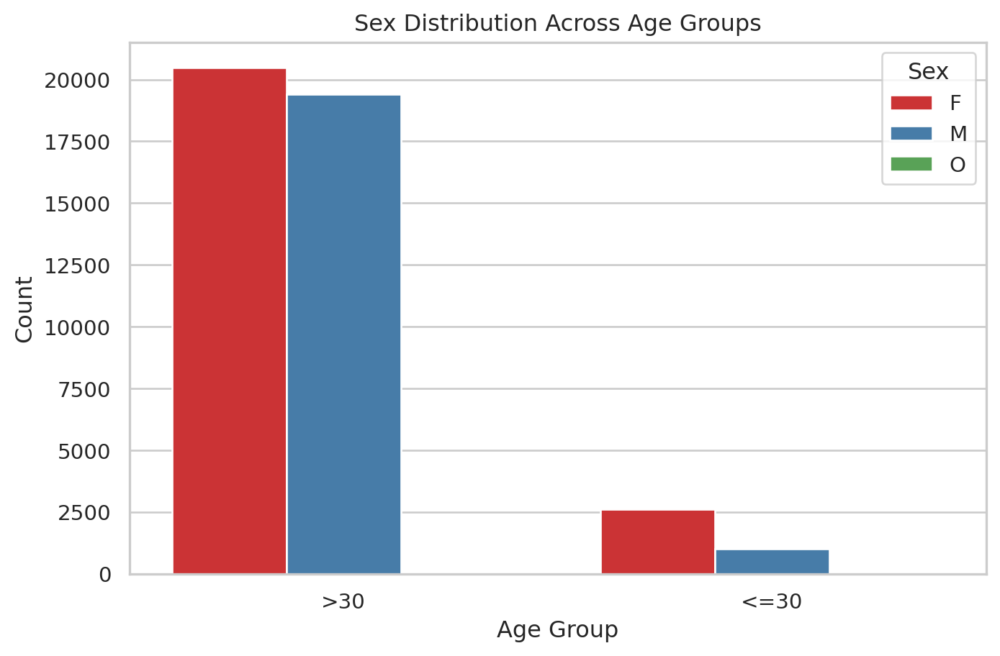
g = sns.catplot(
data=df,
x="BMI Category",
hue="Age Group",
kind="count",
palette="Set2",
height=5,
aspect=1.6
)
g.set_axis_labels("BMI Category", "Count")
g.set_titles("BMI Category Distribution by Age Group")
g.ax.tick_params(axis="x", rotation=15)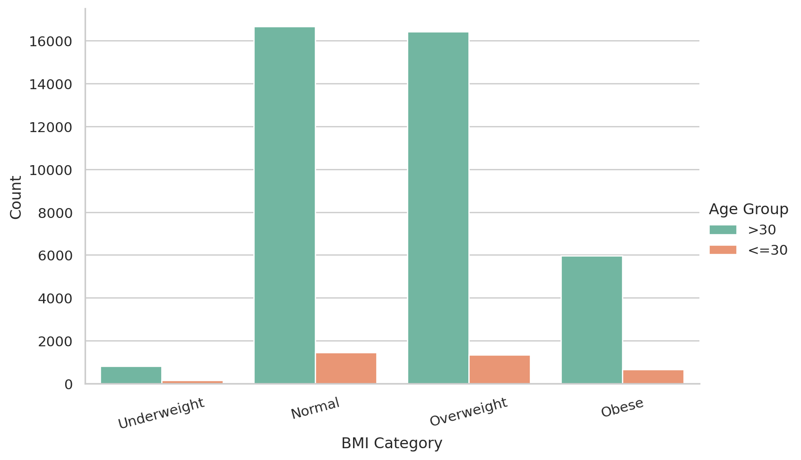
group_summary = (
df.groupby("Age Group")[["Age", "Height (CM)", "Weight (KG)", "BMI", "Fasting"]]
.agg(["count", "mean", "median", "std", "min", "max"])
.round(2)
)
group_summary| Age | Height (CM) | ... | BMI | Fasting | |||||||||||||||||
|---|---|---|---|---|---|---|---|---|---|---|---|---|---|---|---|---|---|---|---|---|---|
| count | mean | median | std | min | max | count | mean | median | std | ... | median | std | min | max | count | mean | median | std | min | max | |
| Age Group | |||||||||||||||||||||
| <=30 | 3624 | 26.72 | 28.0 | 3.57 | 3.0 | 30.0 | 896 | 156.88 | 155.0 | 8.53 | ... | 25.61 | 4.80 | 15.01 | 57.47 | 3624 | 10.96 | 9.5 | 4.96 | 3.3 | 34.1 |
| >30 | 39893 | 49.52 | 49.0 | 10.77 | 31.0 | 110.0 | 10049 | 158.13 | 158.0 | 8.91 | ... | 25.59 | 4.14 | 15.01 | 53.33 | 39893 | 11.18 | 9.9 | 4.57 | 0.0 | 38.0 |
2 rows × 30 columns
group_sex_summary = (
df.groupby(["Age Group", "Sex"])[["Height (CM)", "Weight (KG)", "BMI", "Fasting"]]
.agg(["count", "mean", "median", "std"])
.round(2)
)
group_sex_summary| Height (CM) | Weight (KG) | BMI | Fasting | ||||||||||||||
|---|---|---|---|---|---|---|---|---|---|---|---|---|---|---|---|---|---|
| count | mean | median | std | count | mean | median | std | count | mean | median | std | count | mean | median | std | ||
| Age Group | Sex | ||||||||||||||||
| <=30 | F | 623 | 153.20 | 153.0 | 5.62 | 631 | 62.66 | 61.0 | 13.08 | 2614 | 26.66 | 26.25 | 4.75 | 2614 | 10.13 | 8.70 | 4.56 |
| M | 273 | 165.27 | 166.0 | 8.09 | 278 | 66.84 | 66.0 | 13.75 | 1010 | 24.43 | 24.17 | 4.58 | 1010 | 13.13 | 12.80 | 5.29 | |
| >30 | F | 5002 | 151.73 | 152.0 | 5.76 | 5055 | 61.54 | 61.0 | 11.13 | 20485 | 26.82 | 26.48 | 4.41 | 20487 | 11.07 | 9.70 | 4.56 |
| M | 5047 | 164.48 | 165.0 | 6.65 | 5063 | 67.32 | 67.0 | 11.12 | 19397 | 25.00 | 24.80 | 3.60 | 19404 | 11.29 | 10.00 | 4.58 | |
| O | 0 | NaN | NaN | NaN | 0 | NaN | NaN | NaN | 2 | 25.58 | 25.58 | 4.40 | 2 | 6.45 | 6.45 | 1.48 | |
corr = df[["Age", "Height (CM)", "Weight (KG)", "BMI", "Fasting"]].corr(numeric_only=True)
ax = sns.heatmap(
corr,
annot=True,
cmap="coolwarm",
fmt=".2f",
linewidths=0.5
)
ax.set_title("Correlation Heatmap of Core Numerical Variables")Text(0.5, 1.0, 'Correlation Heatmap of Core Numerical Variables')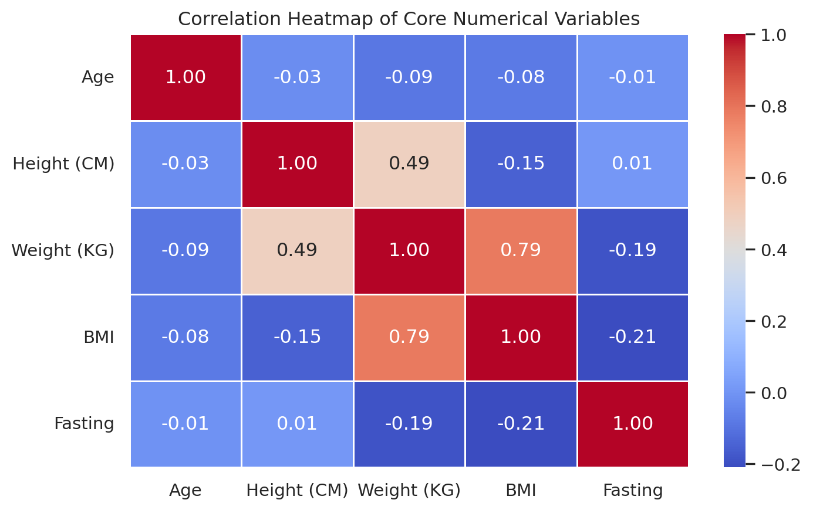
Age <= 30corr_young = (
df.loc[df["Age Group"] == "<=30", ["Age", "Height (CM)", "Weight (KG)", "BMI", "Fasting"]]
.corr(numeric_only=True)
)
ax = sns.heatmap(
corr_young,
annot=True,
cmap="coolwarm",
fmt=".2f",
linewidths=0.5
)
ax.set_title("Correlation Heatmap for Age <= 30")Text(0.5, 1.0, 'Correlation Heatmap for Age <= 30')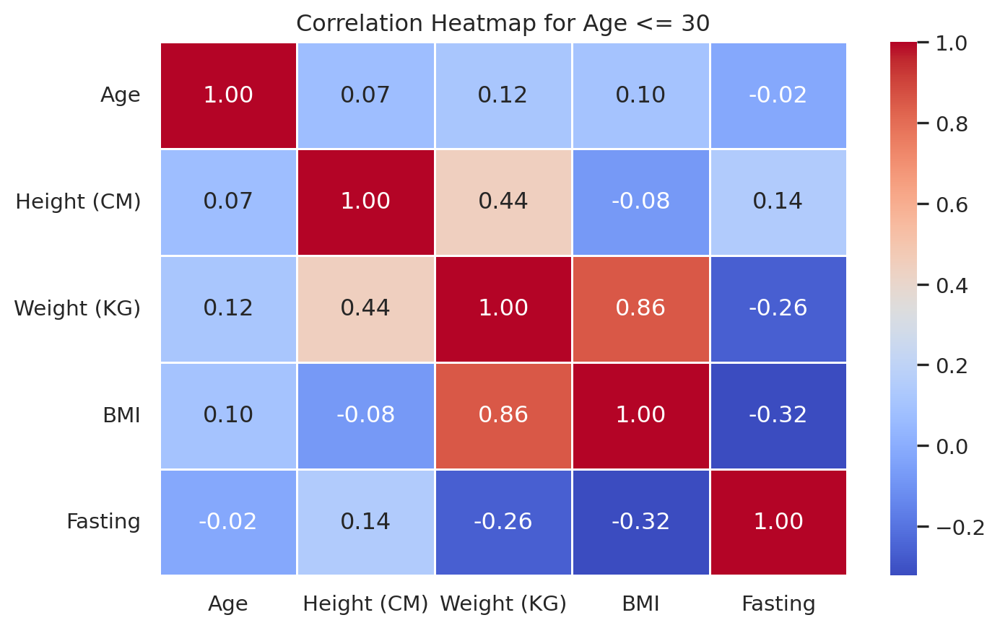
Age > 30corr_older = (
df.loc[df["Age Group"] == ">30", ["Age", "Height (CM)", "Weight (KG)", "BMI", "Fasting"]]
.corr(numeric_only=True)
)
ax = sns.heatmap(
corr_older,
annot=True,
cmap="coolwarm",
fmt=".2f",
linewidths=0.5
)
ax.set_title("Correlation Heatmap for Age > 30")Text(0.5, 1.0, 'Correlation Heatmap for Age > 30')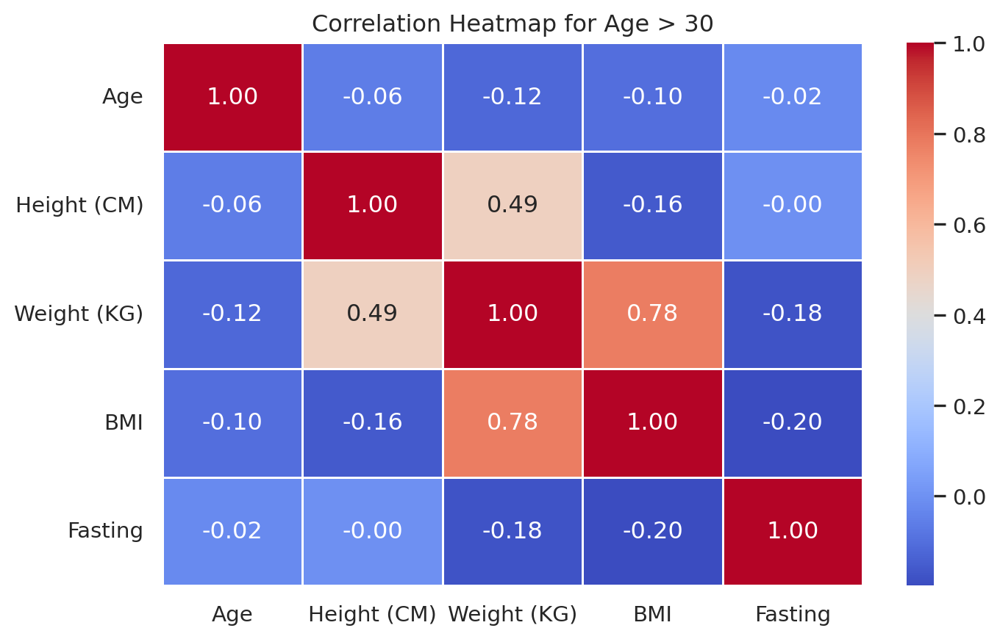
ax = sns.histplot(
data=df,
x="Fasting",
kde=True,
bins=30
)
ax.set(
xlabel="Fasting",
ylabel="Count",
title="Overall Distribution of Fasting"
)[Text(0.5, 0, 'Fasting'),
Text(0, 0.5, 'Count'),
Text(0.5, 1.0, 'Overall Distribution of Fasting')]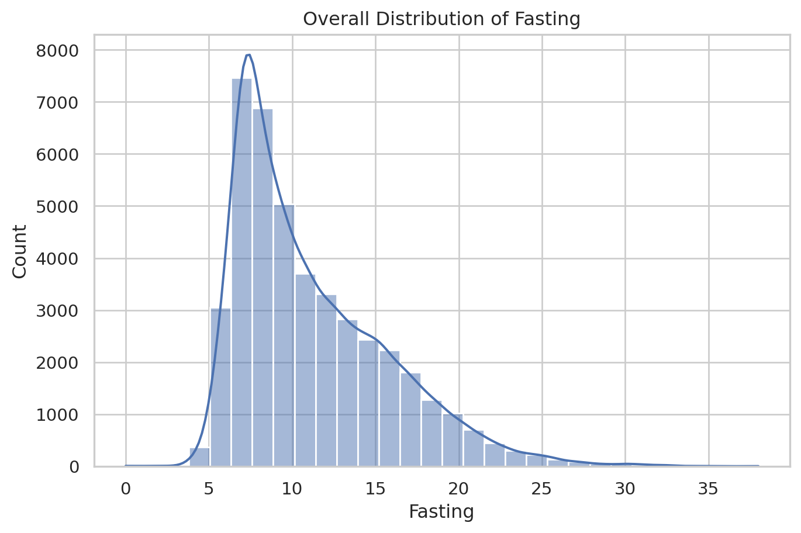
ax = sns.histplot(
data=df,
x="Fasting",
hue="Age Group",
kde=True,
bins=30,
element="step",
stat="count",
common_norm=False
)
ax.set(
xlabel="Fasting",
ylabel="Count",
title="Fasting Distribution by Age Group"
)[Text(0.5, 0, 'Fasting'),
Text(0, 0.5, 'Count'),
Text(0.5, 1.0, 'Fasting Distribution by Age Group')]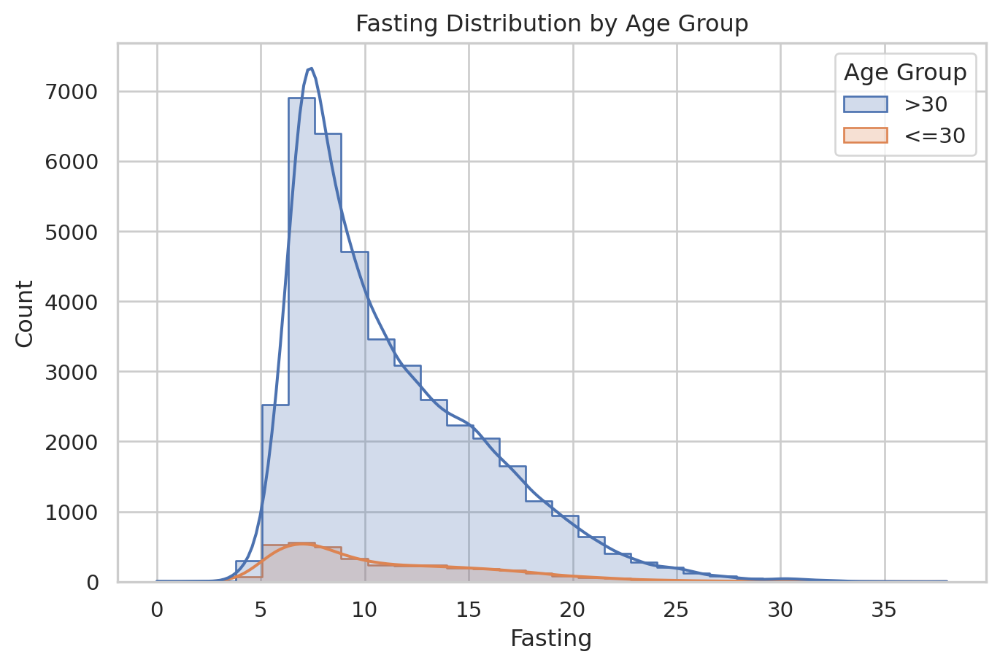
ax = sns.histplot(
data=df,
x="BMI",
kde=True,
bins=30
)
ax.set(
xlabel="BMI",
ylabel="Count",
title="Overall Distribution of BMI"
)[Text(0.5, 0, 'BMI'),
Text(0, 0.5, 'Count'),
Text(0.5, 1.0, 'Overall Distribution of BMI')]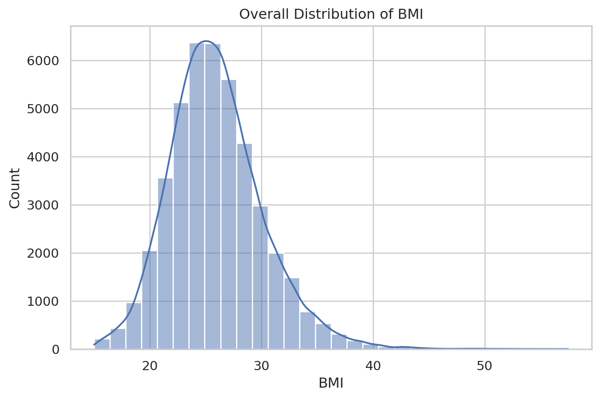
ax = sns.histplot(
data=df,
x="BMI",
hue="Age Group",
kde=True,
bins=30,
element="step",
stat="count",
common_norm=False
)
ax.set(
xlabel="BMI",
ylabel="Count",
title="BMI Distribution by Age Group"
)[Text(0.5, 0, 'BMI'),
Text(0, 0.5, 'Count'),
Text(0.5, 1.0, 'BMI Distribution by Age Group')]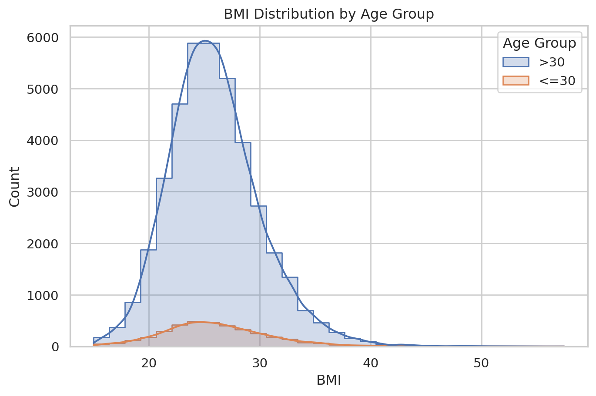
ax = sns.kdeplot(
data=df,
x="Fasting",
hue="Age Group",
fill=True,
common_norm=False,
alpha=0.4
)
ax.set(
xlabel="Fasting",
ylabel="Density",
title="Density of Fasting by Age Group"
)[Text(0.5, 0, 'Fasting'),
Text(0, 0.5, 'Density'),
Text(0.5, 1.0, 'Density of Fasting by Age Group')]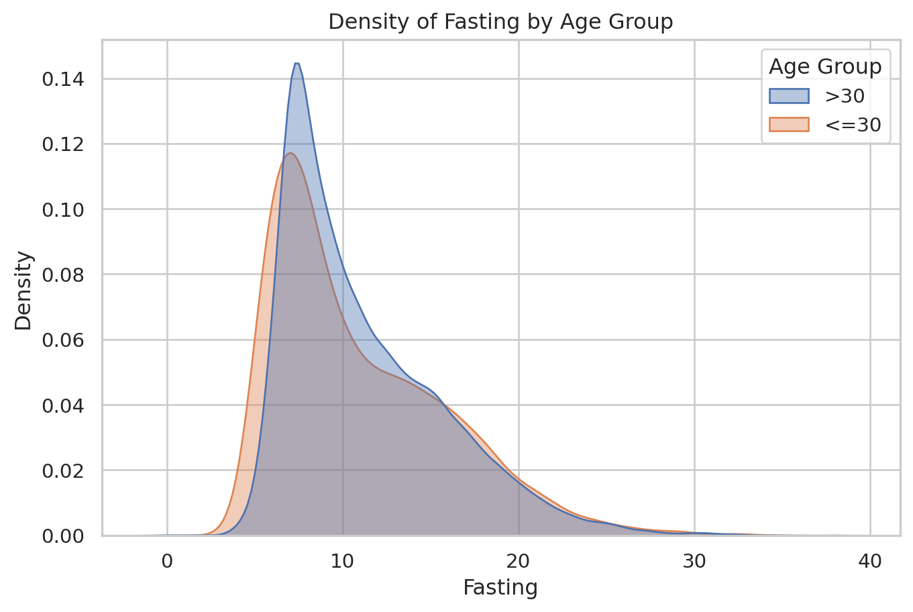
ax = sns.scatterplot(
data=df,
x="Age",
y="Fasting",
hue="Age Group",
palette="Set1",
alpha=0.7
)
ax.set(
xlabel="Age",
ylabel="Fasting",
title="Age vs Fasting"
)[Text(0.5, 0, 'Age'),
Text(0, 0.5, 'Fasting'),
Text(0.5, 1.0, 'Age vs Fasting')]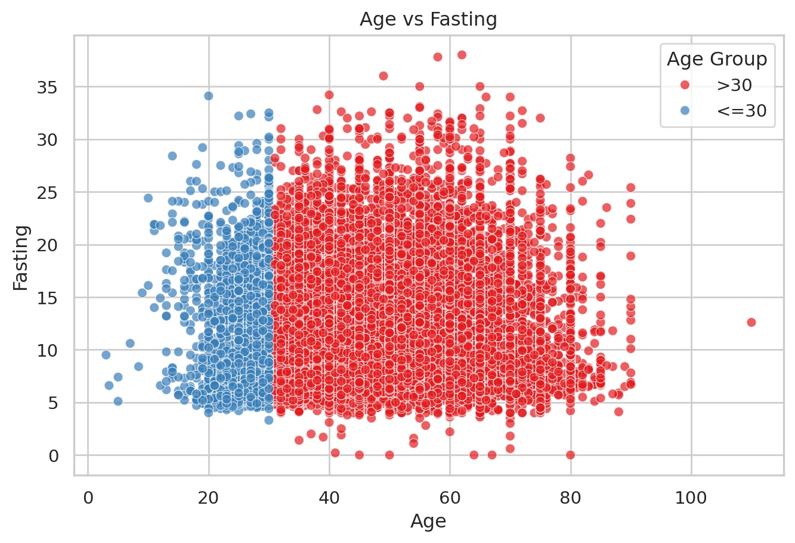
age_fasting = (
df.groupby(["Age", "Age Group"], as_index=False)["Fasting"]
.mean()
)
ax = sns.lineplot(
data=age_fasting,
x="Age",
y="Fasting",
hue="Age Group",
marker="o"
)
ax.set(
xlabel="Age",
ylabel="Mean Fasting",
title="Mean Fasting by Age"
)[Text(0.5, 0, 'Age'),
Text(0, 0.5, 'Mean Fasting'),
Text(0.5, 1.0, 'Mean Fasting by Age')]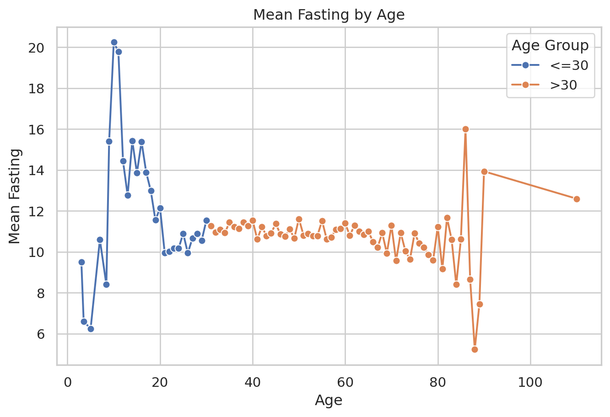
ax = sns.scatterplot(
data=df,
x="BMI",
y="Fasting",
hue="Age Group",
alpha=0.7,
palette="Set2"
)
ax.set(
xlabel="BMI",
ylabel="Fasting",
title="BMI vs Fasting by Age Group"
)[Text(0.5, 0, 'BMI'),
Text(0, 0.5, 'Fasting'),
Text(0.5, 1.0, 'BMI vs Fasting by Age Group')]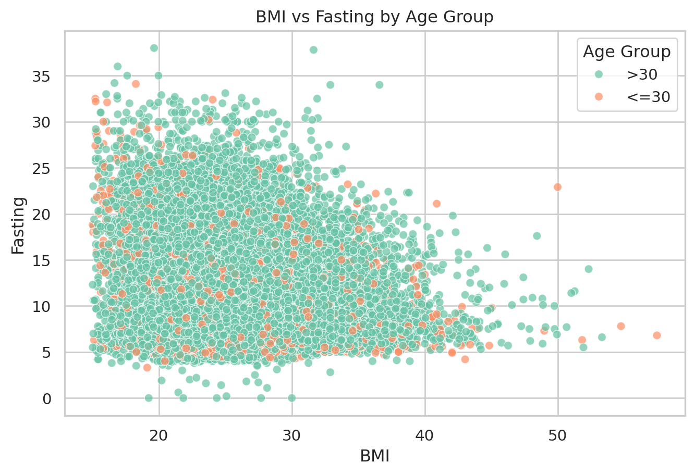
g = sns.lmplot(
data=df,
x="BMI",
y="Fasting",
hue="Age Group",
height=5,
aspect=1.4,
scatter_kws={"alpha": 0.6}
)
g.set_axis_labels("BMI", "Fasting")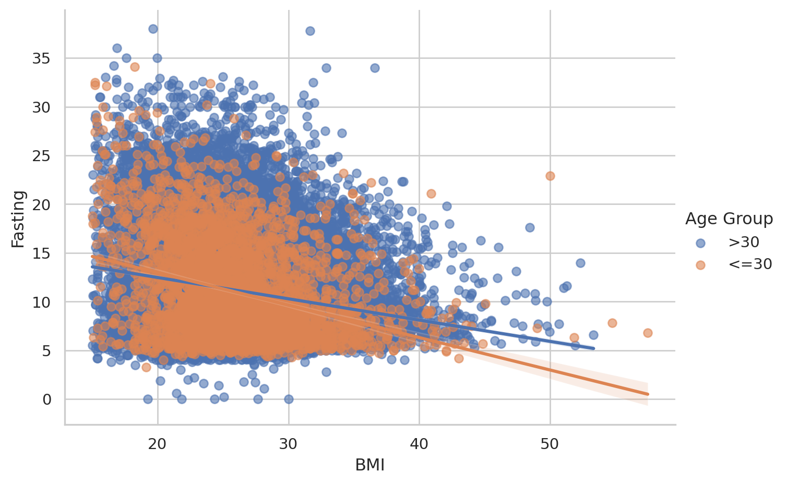
ax = sns.scatterplot(
data=df,
x="Weight (KG)",
y="Fasting",
hue="Age Group",
alpha=0.7,
palette="Set1"
)
ax.set(
xlabel="Weight (KG)",
ylabel="Fasting",
title="Weight vs Fasting by Age Group"
)[Text(0.5, 0, 'Weight (KG)'),
Text(0, 0.5, 'Fasting'),
Text(0.5, 1.0, 'Weight vs Fasting by Age Group')]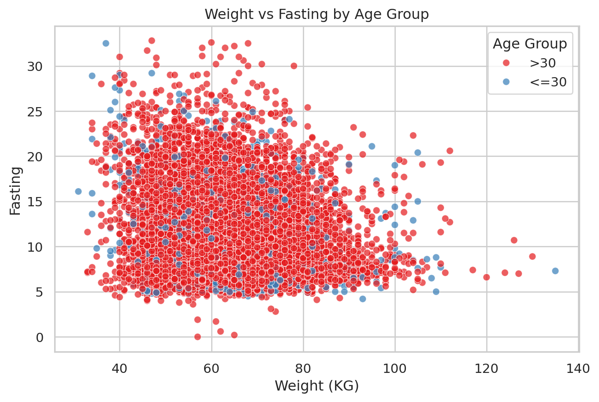
ax = sns.scatterplot(
data=df,
x="Height (CM)",
y="Fasting",
hue="Age Group",
alpha=0.7,
palette="Set2"
)
ax.set(
xlabel="Height (CM)",
ylabel="Fasting",
title="Height vs Fasting by Age Group"
)[Text(0.5, 0, 'Height (CM)'),
Text(0, 0.5, 'Fasting'),
Text(0.5, 1.0, 'Height vs Fasting by Age Group')]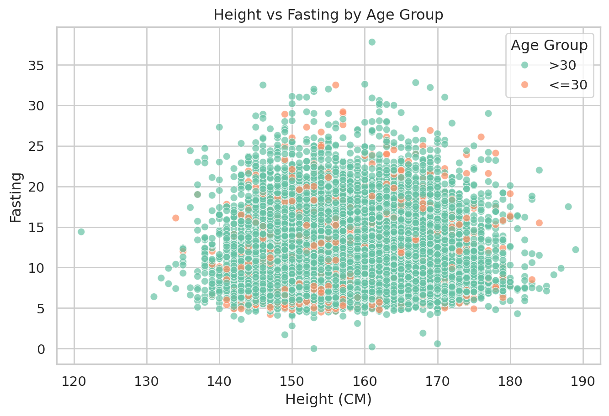
ax = sns.boxplot(
data=df,
x="Sex",
y="Fasting",
hue="Age Group",
palette="Set2"
)
ax.set(
xlabel="Sex",
ylabel="Fasting",
title="Fasting by Sex and Age Group"
)[Text(0.5, 0, 'Sex'),
Text(0, 0.5, 'Fasting'),
Text(0.5, 1.0, 'Fasting by Sex and Age Group')]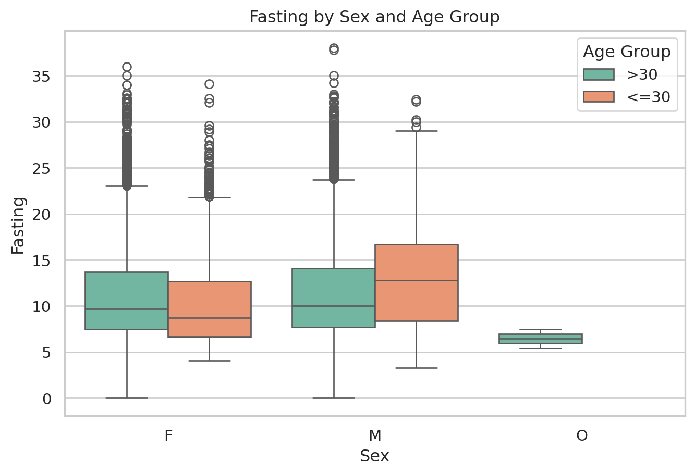
ax = sns.boxplot(
data=df,
x="Sex",
y="BMI",
hue="Age Group",
palette="Set1"
)
ax.set(
xlabel="Sex",
ylabel="BMI",
title="BMI by Sex and Age Group"
)[Text(0.5, 0, 'Sex'),
Text(0, 0.5, 'BMI'),
Text(0.5, 1.0, 'BMI by Sex and Age Group')]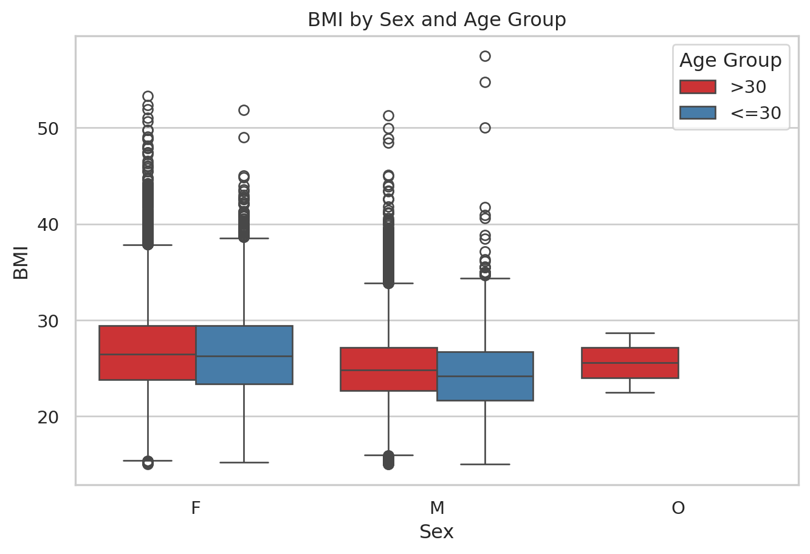
ax = sns.boxplot(
data=df,
x="Age Group",
y="Fasting",
hue="Age Group",
palette="Set2",
legend=False
)
ax.set(
xlabel="Age Group",
ylabel="Fasting",
title="Fasting by Age Group"
)[Text(0.5, 0, 'Age Group'),
Text(0, 0.5, 'Fasting'),
Text(0.5, 1.0, 'Fasting by Age Group')]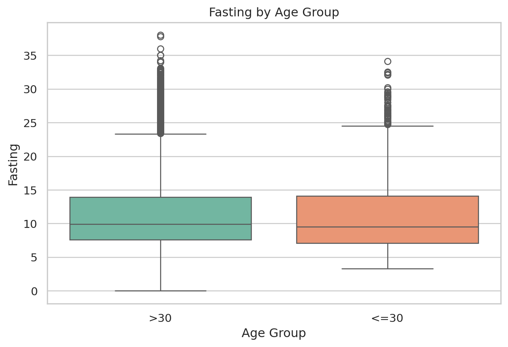
ax = sns.boxplot(
data=df,
x="Age Group",
y="BMI",
hue="Age Group",
palette="Set1",
legend=False
)
ax.set(
xlabel="Age Group",
ylabel="BMI",
title="BMI by Age Group"
)[Text(0.5, 0, 'Age Group'),
Text(0, 0.5, 'BMI'),
Text(0.5, 1.0, 'BMI by Age Group')]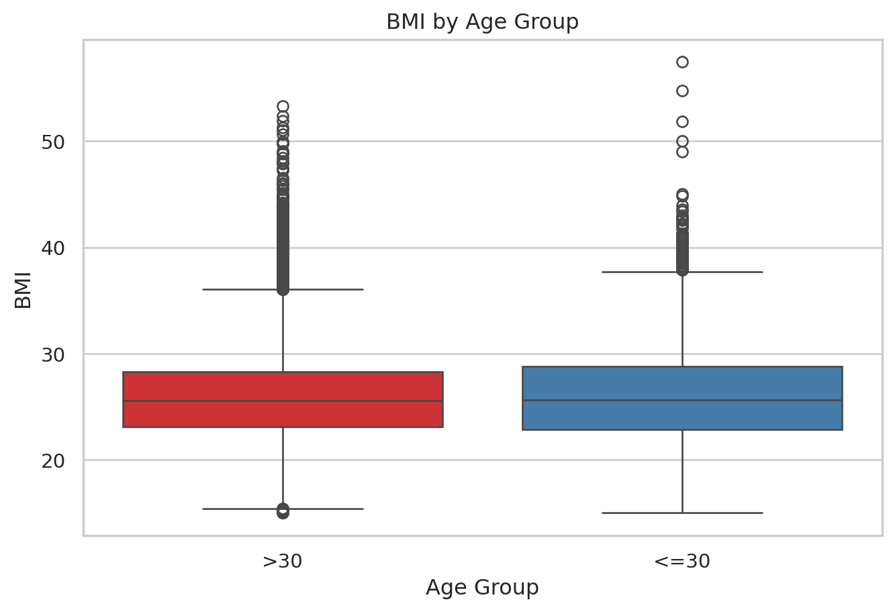
ax = sns.violinplot(
data=df,
x="Age Group",
y="Fasting",
hue="Age Group",
palette="Pastel1",
legend=False
)
ax.set(
xlabel="Age Group",
ylabel="Fasting",
title="Fasting Distribution Shape by Age Group"
)[Text(0.5, 0, 'Age Group'),
Text(0, 0.5, 'Fasting'),
Text(0.5, 1.0, 'Fasting Distribution Shape by Age Group')]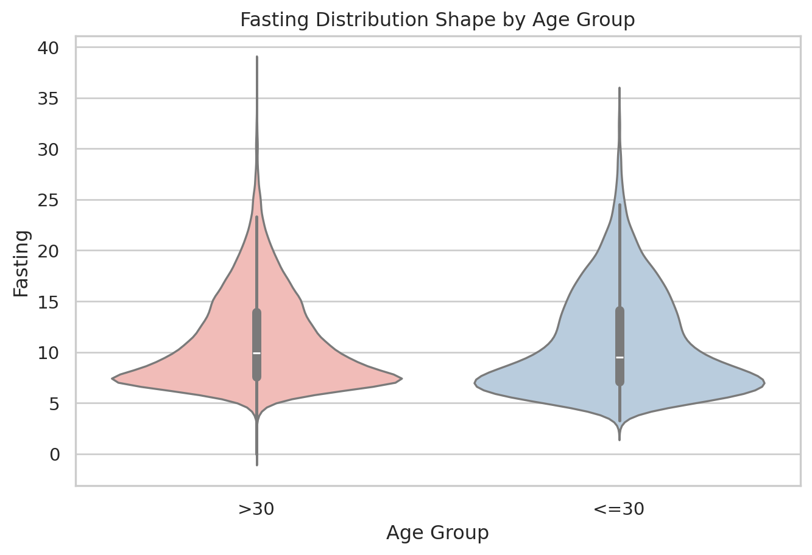
ax = sns.lineplot(
data=df,
x="Age",
y="Fasting",
hue="Sex",
style="Age Group",
estimator="mean"
)
ax.set(
xlabel="Age",
ylabel="Mean Fasting",
title="Mean Fasting by Age, Sex, and Age Group"
)[Text(0.5, 0, 'Age'),
Text(0, 0.5, 'Mean Fasting'),
Text(0.5, 1.0, 'Mean Fasting by Age, Sex, and Age Group')]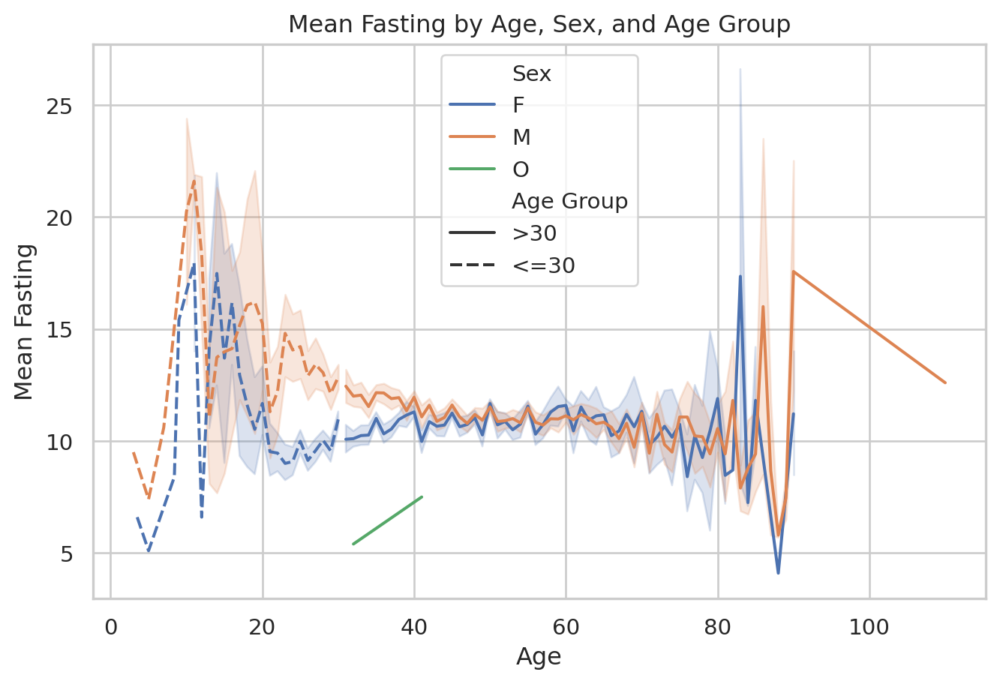
g = sns.relplot(
data=df,
x="BMI",
y="Fasting",
col="Age Group",
hue="Sex",
kind="scatter",
alpha=0.7,
height=5,
aspect=1.1
)
g.set_axis_labels("BMI", "Fasting")
g.set_titles("Age Group: {col_name}")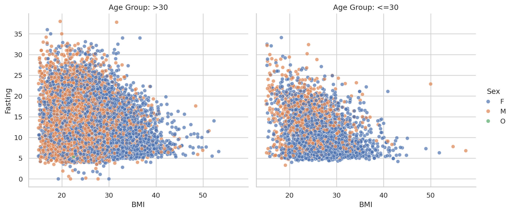
g = sns.relplot(
data=df,
x="Weight (KG)",
y="Fasting",
col="Age Group",
hue="Sex",
kind="scatter",
alpha=0.7,
height=5,
aspect=1.1
)
g.set_axis_labels("Weight (KG)", "Fasting")
g.set_titles("Age Group: {col_name}")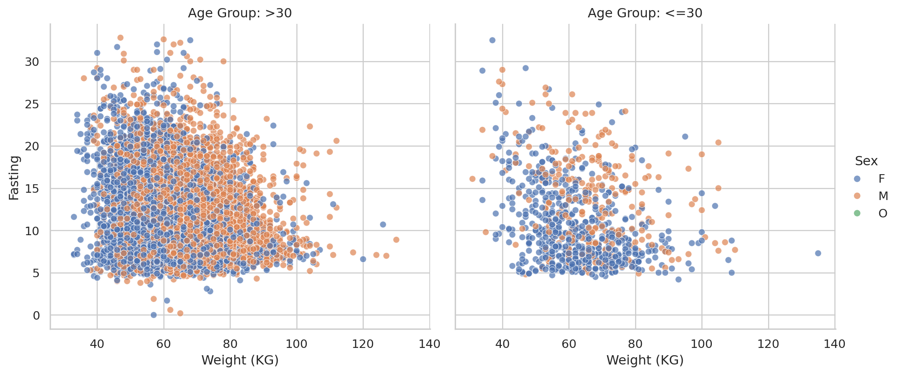
pairplot_df = df[
["Age", "Height (CM)", "Weight (KG)", "BMI", "Fasting", "Age Group"]
].dropna()
sns.pairplot(
pairplot_df,
hue="Age Group",
corner=True,
diag_kind="hist"
)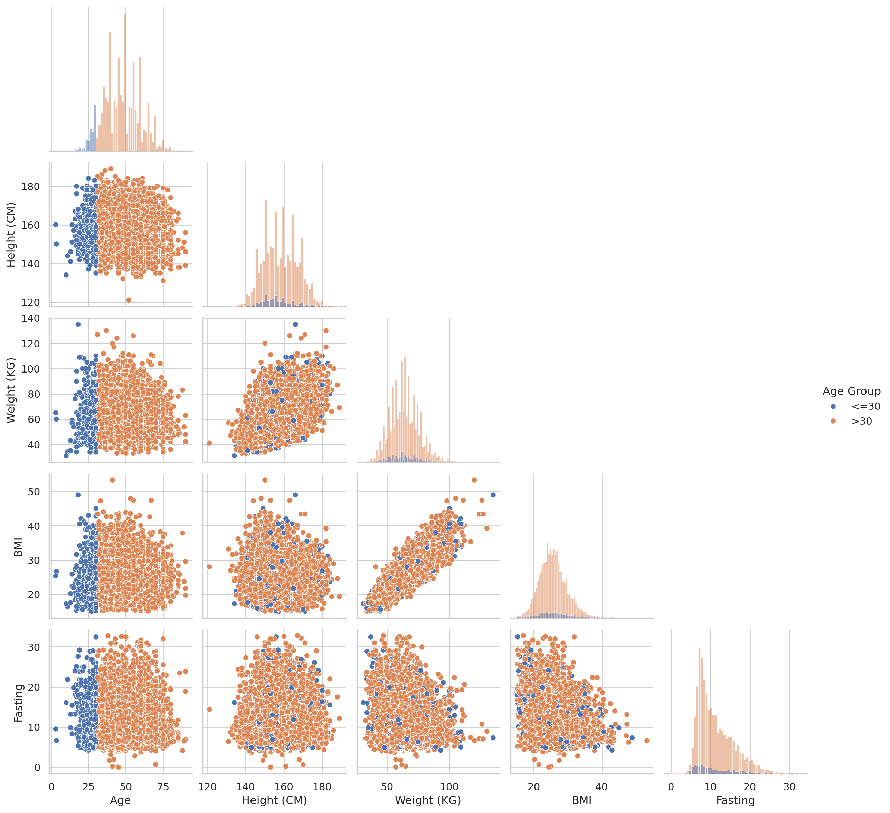
mean_comparison = (
df.groupby("Age Group")[["Height (CM)", "Weight (KG)", "BMI", "Fasting"]]
.mean()
.round(2)
.sort_index()
)
mean_comparison| Height (CM) | Weight (KG) | BMI | Fasting | |
|---|---|---|---|---|
| Age Group | ||||
| <=30 | 156.88 | 63.94 | 26.04 | 10.96 |
| >30 | 158.13 | 64.43 | 25.94 | 11.18 |
median_comparison = (
df.groupby("Age Group")[["Height (CM)", "Weight (KG)", "BMI", "Fasting"]]
.median()
.round(2)
.sort_index()
)
median_comparison| Height (CM) | Weight (KG) | BMI | Fasting | |
|---|---|---|---|---|
| Age Group | ||||
| <=30 | 155.0 | 63.0 | 25.61 | 9.5 |
| >30 | 158.0 | 64.0 | 25.59 | 9.9 |
sex_age_fasting = (
df.groupby(["Age Group", "Sex"])["Fasting"]
.mean()
.round(2)
.unstack()
)
sex_age_fasting| Sex | F | M | O |
|---|---|---|---|
| Age Group | |||
| <=30 | 10.13 | 13.13 | NaN |
| >30 | 11.07 | 11.29 | 6.45 |
bmi_age_table = pd.crosstab(df["BMI Category"], df["Age Group"])
bmi_age_table| Age Group | <=30 | >30 |
|---|---|---|
| BMI Category | ||
| Underweight | 156 | 827 |
| Normal | 1465 | 16658 |
| Overweight | 1340 | 16423 |
| Obese | 663 | 5976 |